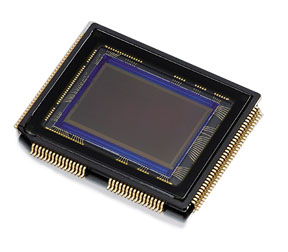

Le capteur est un élément essentiel de l’appareil photo numérique. Il transforme la lumière en image numérique.

- Réception de la lumière
- Transformation en signal
- Création de l’image
- La lumière entre
- Le capteur reçoit
- L’image est créée
| Type | Exemple |
|---|---|
| CMOS | Smartphone |
| CCD | Appareil photo |
Source : Cours SNT